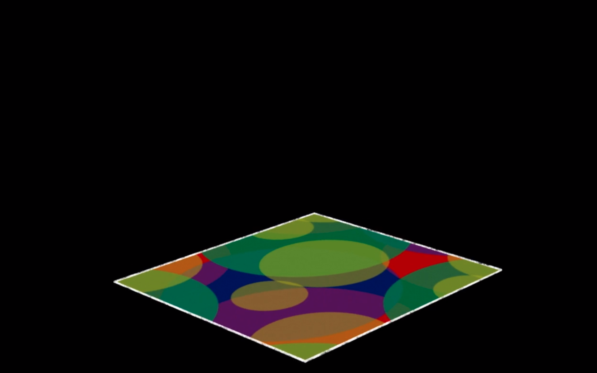
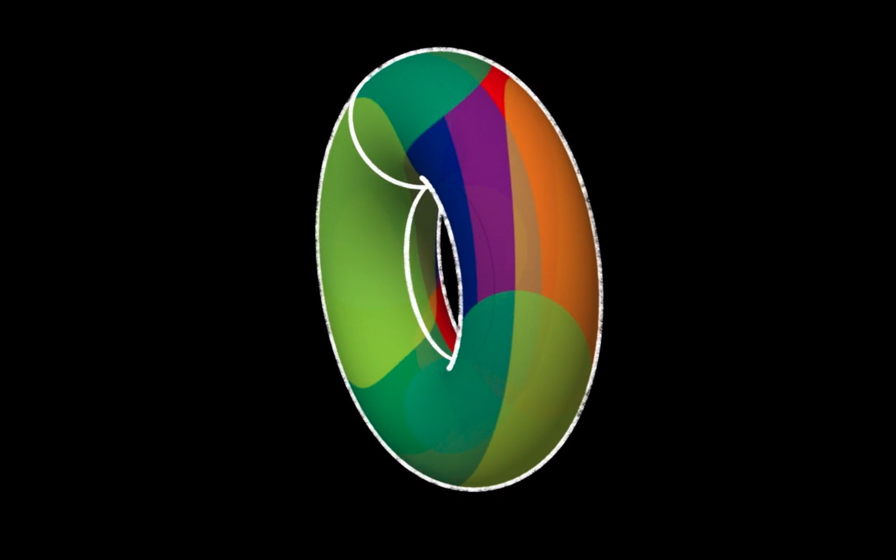
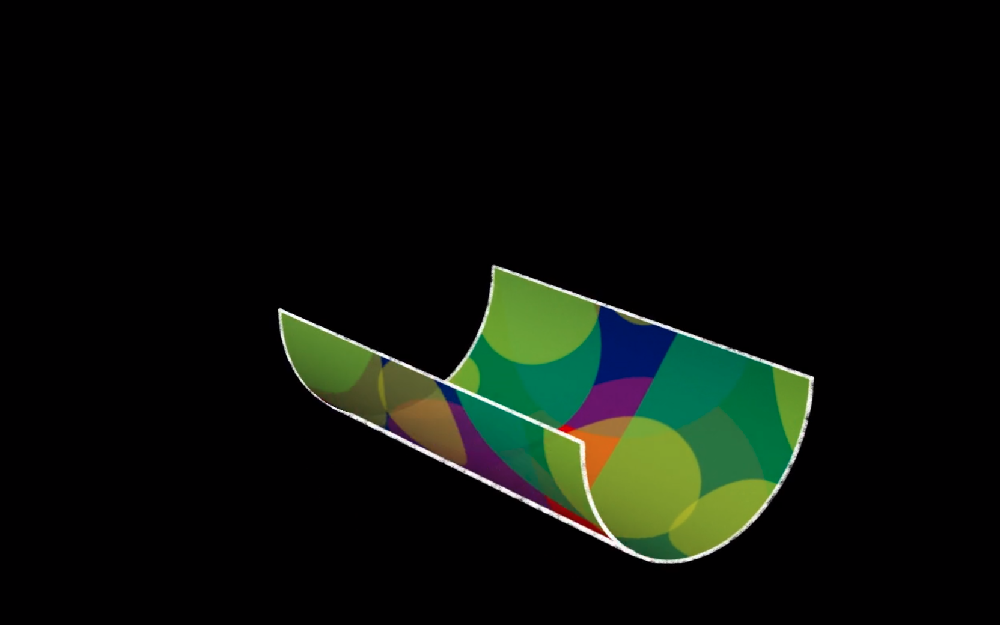
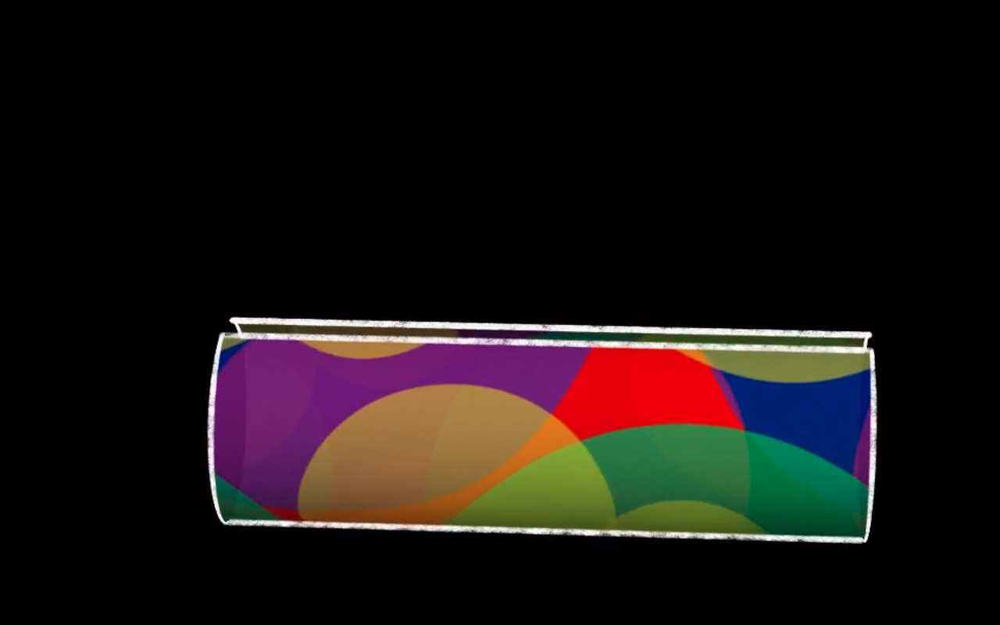
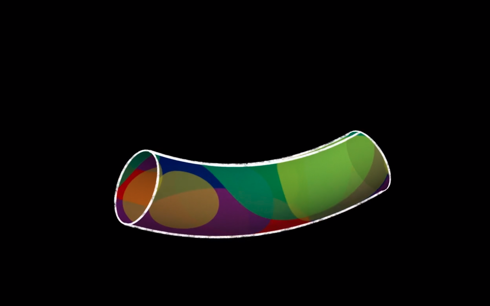
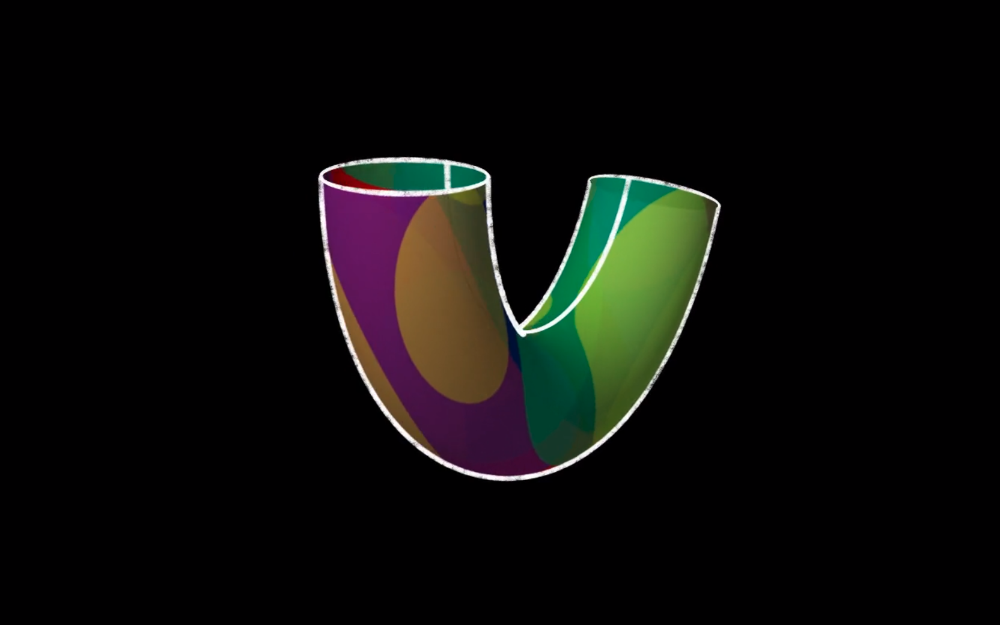
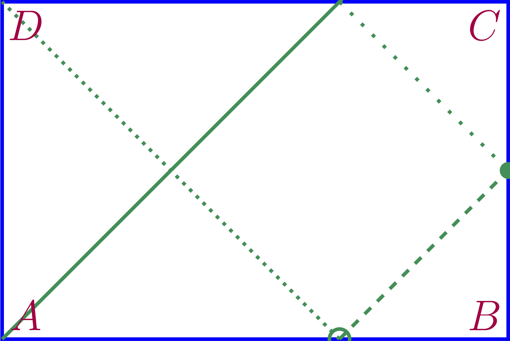
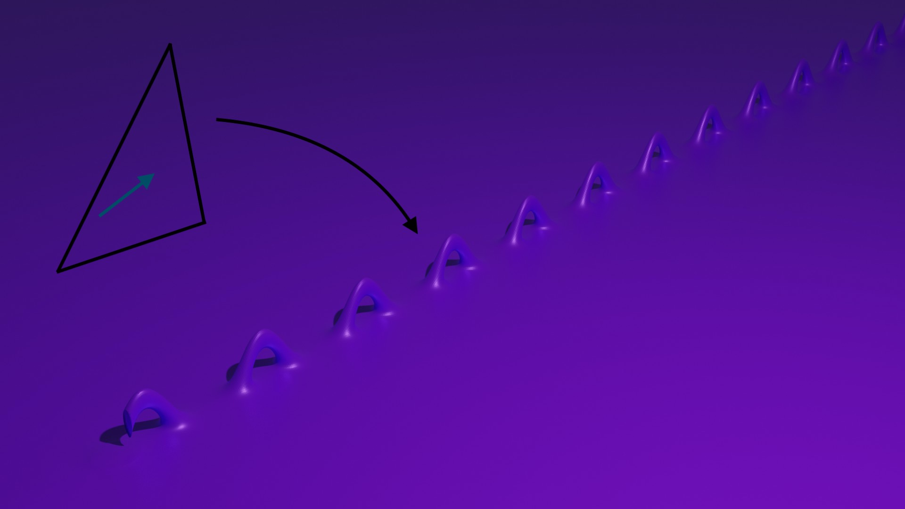
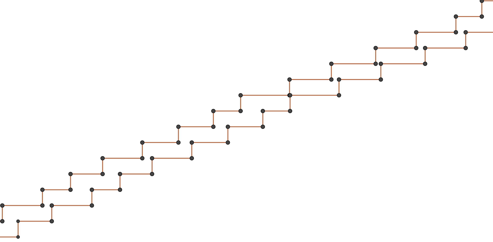
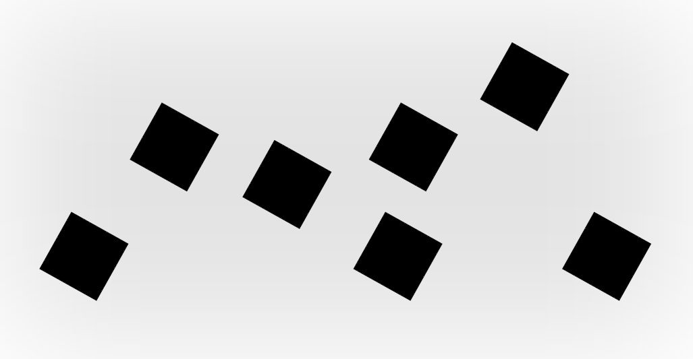

Alba Marina Málaga Sabogal
 \({}\) \({}\)
\({}\) \({}\) 
Candidature au poste de maître de conférences n°4730
 \({}\) \({}\)
\({}\) \({}\) 
Enseignement, Recherche, Développement, Médiation
| 2019-2020 | ICERM, Brown U. | post-doc | R | |||
| 2017-2019 | Inria | ing. R& | R | D | ||
| 2016-2017 | U Paris 8 | ATER | E | R | ||
| 2016 | BlueRidge | dev | D | |||
| 2015-2016 | U Paris-Sud | ATER | E | R | ||
| 2015 | Aix-Marseille U | post-doc | R | |||
| 2015 | IMAGINARY | coord. FR | M | |||
| 2011-2014 | U Paris-Sud | doctorat | E | R | D | M |
| 2009-2011 | U Paris-Sud | master | ||||
| 2008-2011 | Polytechnique | cycle ingé. | ||||
| 2008 | UNI (Lima) | chargée TD | E | |||
| 2004-2006 | IMCA (Lima) | master | ||||
| 2002-2006 | UNI (Lima) | licence |
Dynamique et théorie ergodique sur des surfaces de translation de mesure infinie
Le tore: exemple élementaire de surface de translation

Tore plat, par Pierre Berger CC-BY-NC-SA

Tore “rond”, par Pierre Berger CC-BY-NC-SA
En fait, c’est le même espace topologique:
Transition du tore plat au tore “rond”, par Pierre Berger CC-BY-NC-SA
En fait, c’est le même espace topologique:

Transition du tore plat au tore “rond”, par Pierre Berger CC-BY-NC-SA
En fait, c’est le même espace topologique:

Transition du tore plat au tore “rond”, par Pierre Berger CC-BY-NC-SA
En fait, c’est le même espace topologique:

Transition du tore plat au tore “rond”, par Pierre Berger CC-BY-NC-SA
En fait, c’est le même espace topologique:

Transition du tore plat au tore “rond”, par Pierre Berger CC-BY-NC-SA
En fait, c’est le même espace topologique:
Tore “rond”, par Pierre Berger CC-BY-NC-SA
Le point de départ: les billards mathématiques.

Trajectoire dans un billard rectangulaire, par Antonella Perucca CC0
Les billards mathématiques se déplient en surfaces de translation.

}Dépliages de billards irrationnels

Surfaces en escalier

Le wind-tree et son dépliage

Generiquement, le flot par droites dans de larges classes de surfaces de translation de genre infini (wind-trees, escaliers, \(\dots\) ) est:
>600h dont 192h responsable de cours
| 2018-2019 | U Paris-Saclay (60h) | info | |
| 2016-2017 | U Paris 8 (192h) | info | |
| 2015-2016 | U Paris-Sud (192h) | math | |
| 2014 | U Paris-Sud (96h) | math | |
| 2008 | UNI (192h) | math |